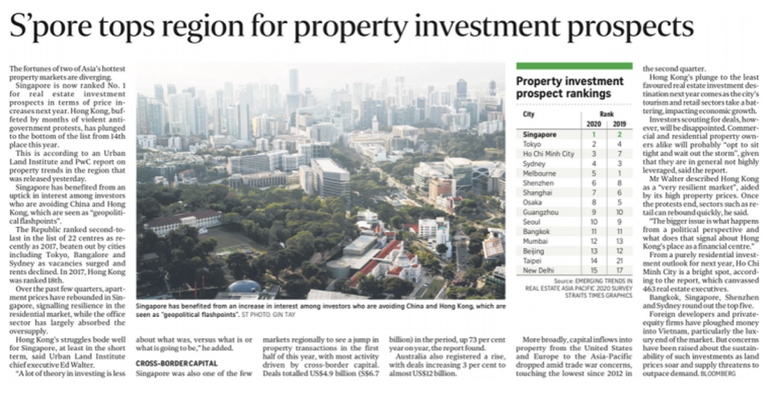
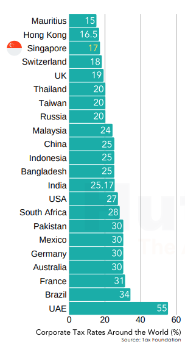
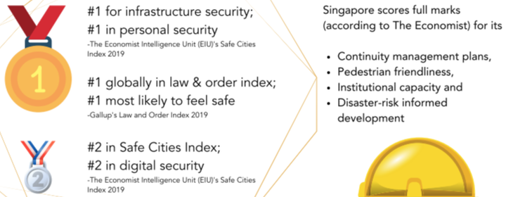

Can Foreigners Buy Property in Singapore?
Foreigners are voting Singapore as the top city in the Asia Pacific region for property ownership. If you are interested in acquiring private residential property as a foreigner in Singapore, there are some particular rules and restrictions surrounding what types of properties you may or may not buy.
What Types of Properties Can Foreigners Buy?
Foreigners will need to take note of Singapore's private residential property buying and selling regulations well with your overall risk appetite.
The legal definition of a 'foreigner' in Singapore's case would be: (1) Anyone that is not a Singapore citizen; (2) Not a Singapore-based company; (3) Not a Singapore Society; (4) Does not have Singapore limited liability partnership.
So even if you're a Singaporean Permanent Resident (SPR) there are still rules and restrictions surrounding what types of properties you may or may not buy. Singapore PRs may however apply for Singapore Citizenship after meeting specific criteria and proceed to purchase real estate in Singapore as a citizen.
In Singapore, foreign persons can purchase a condominium unit without approval under the Residential Property Act under the Singapore Land Authority such as: a strata landed house in an approved condominium development; landed houses on Sentosa (with approval from the Land Dealings Approval Unit); an executive condominium unit that has reached its 10th year privatisation; a private residential condo / apartment; HDB shophouse.
Restrictions on Landed Properties

For landed properties, there are certain restrictions put in place by the government in order to manage such a market, even when purchasing properties located in Sentosa Cove.
To buy landed property, foreigners must obtain approval from the Land Dealings Approval Unit. Foreigners may alternatively take up a leasehold estate in a landed residential property for a term not exceeding seven years, including any further terms which may be granted by way of an option for renewal.
According to the Singapore Land Authority: Land Dealings Approval Unit, applicants are assessed on a case-by-case basis, taking into consideration but not limited to the following factors: (1) You should be a permanent resident of Singapore for at least five years; and (2) You must make exceptional economic contributions to Singapore. This is assessed taking into consideration factors such as your employment income assessable for tax in Singapore.
On top of the application criteria, foreign buyers are also restricted to residential properties that do not exceed 15,000 sqft and are not situated within a good class bungalow area.
The criteria for the purchase of landed houses in Sentosa Cove is less stringent: you shall use the property solely for your own occupation and that of the members of your family as a dwelling house and not for rental or any other purpose. The only restriction imposed is that the property must not exceed 1,800 sqm.
What Taxes Do Foreigners Need to Pay When Buying Property in Singapore?
Anyone buying a property in Singapore must pay a Buyer's Stamp Duty (BSD), which is calculated based on the residential property's value.
On top of BSD, foreigners must pay an Additional Buyer's Stamp Duty (ABSD). Foreigners pay 30% Additional Buyer's Stamp Duty (ABSD).
No Additional Buyer's Stamp Duty (ABSD) is levied by the Singapore government for foreign nationals of the following countries: Iceland, Liechtenstein, Norway, Switzerland, and the United States.
You may also be up for Mortgage Duty, legal and other administration fees.
Singapore's Investment Appeal, Rankings
Singapore ranks first in the Asia-Pacific region for property investment prospects in 2020.
Singapore has constantly been ranking among the first in the Asia-Pacific region for property investment prospects. As the world opens up again after Covid, more investors are looking towards the Asia-Pacific for diversification, yield, and growth.
Singapore stands out among the rest as an attractive hub for foreign investment with its first-rate infrastructure, political stability, and favorable tax policies for both businesses and foreigners. The city-state is also a rare safe haven for investors.

Due to land constraint, Singapore has seen property prices rising steadily over the years with prices remaining resilient during the 2008 Financial Crisis, COVID-19 epidemic and even after several rounds of property cooling measures implemented by the government.
Singapore has a bilingual population well versed in both English and Mandarin coupled with a skilled workforce forming the foundation of human capital. Singapore's geographical location gives it protection from many natural disasters. Unlike other countries in the region, Singapore does not have tsunamis, tropical cyclones, earthquakes nor volcanic eruptions.
Singapore's Low Taxes and Tax Haven Status
With reference to investopedia.com, low tax rates in Singapore are a magnet for global finance. Singapore is one of the few sovereign states that feature mainly as a major corporate tax haven globally. In Singapore, the corporate tax rate is levied at 17% of chargeable income, but the total amount payable could be much lower, due to tax exemptions and rebates.
Economic Freedom, Touted as the world's freest economy, Singapore ranks 1st in the 2020 Heritage Foundation's Index of Economic Freedom.
Ease of Doing Business, The World Bank ranks Singapore's economy as 2nd in Asia in the ease of doing business.
One of the World's Wealthiest Countries, One in six households in Singapore have a net worth of $1m, reflecting the flow of wealth eastwards as the centre of global economic activity shifts to Asia.
With low taxes, a reliable, corruption-free government and protective private banking laws, the world's ultra-rich are flocking to make Singapore home, giving it the highest percentage of millionaire households in the world.
Political Stability
Theglobaleconomy.com ranks Singapore 1st in Asia, and 3rd in the world for political stability. As political stability indexes plunge globally, Singapore remains a safe haven.
According to PWC.com, Singapore claims the top spot in city investment prospects for 2020, and second spot in city development prospects. Office yields, at 3.6%, are some of the lowest in the region, and prices remain high by global standards.
Investors should take a long-term view in any property investment. Singapore will continue to be a top investment destination and a safe haven for investors. Despite the current global economic slowdown, basic fundamentals that have attracted foreign investors all these years, such as the ease of doing business, transparency, safety and political stability, will likely remain unchanged.
Capital Appreciation
Capital appreciation of real estate properties in Singapore depend on economy, location, infrastructure and the property's age and condition. New developments in your neighbourhood, including retail malls, business hubs, transport infrastructure improvements, good schools, and public amenities can drive up the resale prices of your property.

Buyers tend to prefer newer properties, which tend to reap higher capital appreciation. The condition of your property, especially if it is old, can affect its resale value. Newly renovated properties with good design can command higher asking prices.
The property market is unique in that during a recession, while the demand and prices of properties are expected to fall, many investors find that it's actually the best time to cash in. The property market in Singapore is not as volatile as the global stock market. Market demand and prices will start to rise during times of economic prosperity.
Most residential properties in Singapore are leasehold, and leases are most commonly 99 years, while freehold or 999-year leasehold are quite rare. As a property draws closer to the end of its lease, its value will start to drop sharply.
Property cooling measures are designed to control property prices in Singapore. The government can implement new policies and measures at any time, whenever they deem fit. The cooling measures implemented since 2009 have suppressed prices considerably, preventing market crashes and property bubbles.
Permanent Residence and Global Investor Programme
Foreign investors who are interested in starting a business or investing in Singapore may apply for the Singapore Permanent Residence status (PR) through the Global Investor Programme (GIP).
Property-Related Income Taxes

Foreigners that own property in Singapore may earn income by renting out their property or by selling their property. Non-resident rental income tax rate: 22%. Property tax rates on owner-occupied and non-owner occupied residential properties are applied on a progressive scale.
All other properties continue to be taxed at 10% of the Annual Value. For example, if the monthly rental of your property is $3,000/month, then its Annual Value = $3,000 x 12 months = $36,000.
Real Estate Investment Benefits
Real estate returns have relatively low correlations with other asset classes (traditional investment vehicles such as stocks and bonds).
Real estate income tends to increase faster in inflationary environments, allowing an investor to maintain its real returns. An investor has a greater degree of control over a piece of property to increase its value or improve its performance through repairs and renovation work.
Rents provide passive income and capital appreciation offers a bumper return upon exit. It is thus prudent to add real estate into one's portfolio despite its high cost of entry, relative illiquidity, and expensive transaction costs.
Education and International Schools
Properties islandwide near both local and international educational institutions tend to be highly in demand among homeowners and tenants alike, and are expected to fetch higher resale and rental yields.
International students seeking admission to mainstream schools in Singapore should approach the pre-school, private school or institution directly. As English is the medium of instruction in Singapore's schools, international students should also prepare themselves before taking a centralised test, Admissions Exercise for International Students (AEIS).
Conclusion
Singapore is one of the safest places in the world for property investments. A wide range of property types are open for foreigner ownership. Singapore has one of the most competitive tax rates for foreign investments in the world with no capital gains tax. One of the best cities in the world for investors, Singapore ranks 2nd globally in ease of doing business.
Singapore's biggest draw is its economic, political, and social stability. Singapore ranks 1st in the world for infrastructure, the cornerstone of a modern society. As a leading global financial centre, Singapore has many local and foreign banks, so financing a home is easy. The education system in Singapore is ranked one of the best globally, and is also made accessible to foreigners.
Singapore is undoubtedly one of the best cities in the world for property investments.